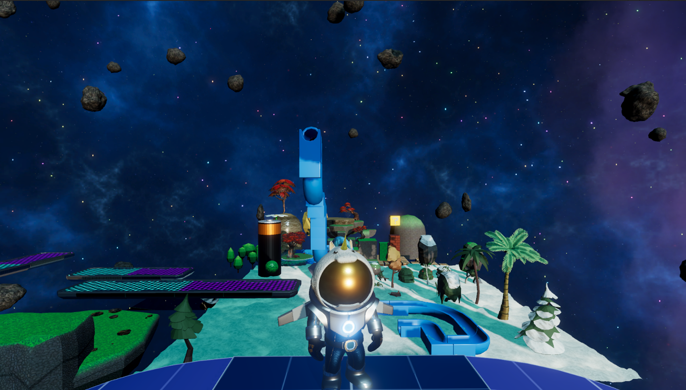
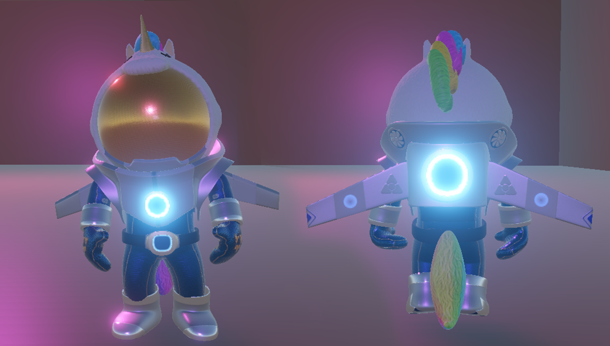
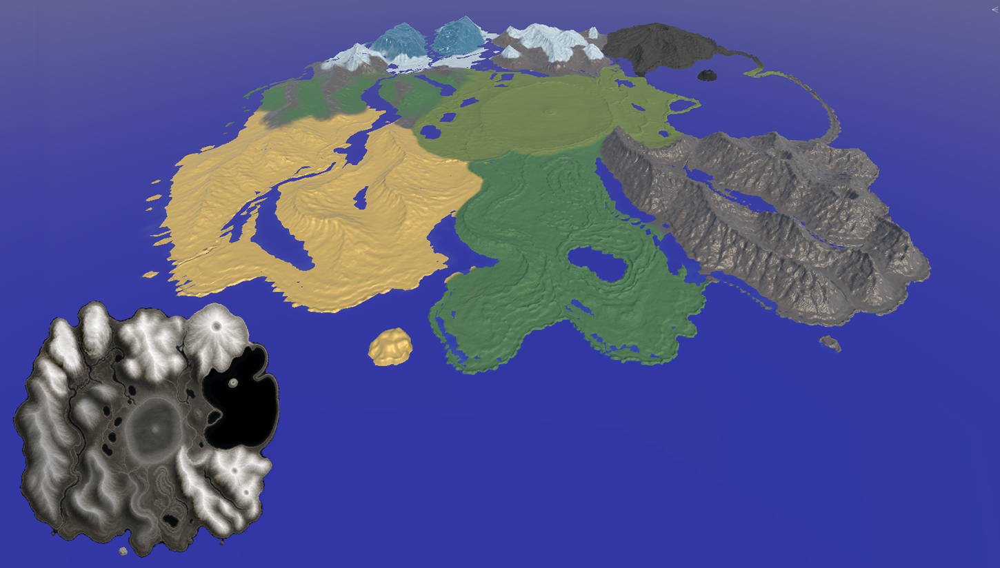
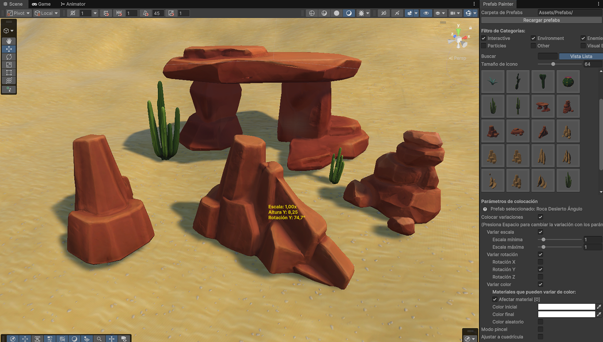

3D Platformer Project
A colorful, family-friendly cooperative sci-fi adventure where players search for a lost companion across alien worlds and escape together using combined abilities.

OVERVIEW
A split-screen multiplayer 3D platformer game designed for all audiences. Features third-person movement, dynamic physics, cooperative puzzles, and enemy encounters.
MY ROLE
Technical Art, 3D character modeling, texturing and adnimation, environment design, stylized shaders development, custom editor tools and URP integration in Unity.
3D Pipeline & Environment Art
Family friendly stylized characters, assets and colorful world.


CHARACTER ART
Original character designed to be charmy to the young ones with smooth and intuitive third-person animations.
ENVIRONMENT DESIGN
Stylized sci-fi props and environment, interactive hazards, wide scenario to discover and drive through it and platforming structures designed for cooperative gameplay.
Shaders & Stylized Environment
Custom Sci-Fi Shader Graph materials and interactive nature.
CUSTOM SHADERS & SCI-FI MATERIALS
Custom interactive water and cascade shaders, sci-fi materials combined with particle systems for creating force shields, meteorites, rain, snow... Parallax materials allowing depth in simple planes.
INTERACTIVE FOLIAGE
Dynamic vegetation responding to player and interacitve objects movement. Foliage color changes according to terrain painted texture.
Editor Tools & Spline Systems
Custom tools built to streamline level design and platform movement.

PREFAB PAINTER TOOL
Custom editor tool featuring grid snapping for rapid, efficient level blocking and asset placement. Compatible with all my other projects.
PLATFORM MOVEMENT BASED ON SPLINES
Different platform mechanics that allows characters to ride moving platforms smoothly while maintaining accurate physics and positioning.
Technologies
Main tools and tech used in the development of the project.